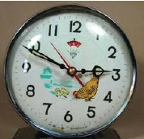
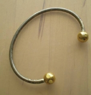

Pinokyo Bisiklet: Kendisi bir masal kahramanıdır. Böyle başlamak uygun olur mu acaba? Diye çok düşündükten sonra, böyle giriş yapmaya karar verdim. Hatırlatmak istediğim Pinokyo, bir masal kahramanı değil, çocukların hayallerini süsleyen bir bisiklet markasıdır.
BMX’lerden önce piyasanın hâkimi olan bu bisiklet, kibar yapısı, yaylı selesi, ilk yardım çantası, arka reflektörleri ve oturma yeri, ikiye katlanabilir yapısıyla, bol aksesuar takılıp süslenmeye müsait bir çizgiye sahiptir. Ama hataları vardır. Sele sürekli sıkıştırılmak zorundadır, fren balataları çok çabuk erir, pek sağlam değildir. Daha sonra, ön ve arka çamurluklar sökülür, arkadaki misafir koltuğu sökülür ve BMX’e benzetilmeye çalışılırdı.
Pinokyo kullananlar büyüdüklerinde daha efendi, düzenli tipler olmuşlardır. BMX kullanıcıları ise, daha maceraperesttirler. Bunu laf olsun diye söyledim, attım yani. Böyle bir istatistik, bir araştırma sonucu, bilgi yoktur.
BMX: O bir efsanedir. “Abi bi tur versene”cileri en fazla peşinden koşturan alettir.
Herkes buna “bemiks” derken, “biemiks” diyen çok bilmişler vardı aramızda. Bunlar ileriki yıllarda da buna benzer bazı telaffuz bilmişlikleri yapmaya devam ettiler.
Pinokyo bisikletlerin hükümdarlığına son vermiştir BMX. Kontra tabirini öğrendiğimiz ve kullandığımız, arka tekeriyle iz bırakmak için uğraşırken, kaş yardığımız, kol bacak kırdığımız o güzel bisikleti unutmak mümkün değildir. O küçücük bisikletle ne hareketler yapardı insanlar. Lastikleri diğer bisikletlere göre kalın olduğu için, arka teker üstünde yol almak daha kolaydı. Sadece önünü kaldırmak için değil, her türlü hokkabazlığı yapabilmek için tasarlanmıştı.
Bizim de bir tane BMX bisikletimiz vardı. Uzun süre kullandık, sonra çalındı. Çok üzülmüştük, ama yenisini almak için yaşımız pek müsait değildi artık.
Walkman: İlk çıkan cihazlar dev boyutlardaydı. Kemere asılmak suretiyle taşınırdı. Kulaklıkları da bu irilikten nasibini almıştı. İnsanlığın büyük icatlarından biridir bu alet. Sony’nin patronunun golf oynarken aklına geldiği söylenir. O zamanlar herkesin belinde takılı dururdu. Çok da sağlam olurlardı. Başlarından geçen maceralara rağmen ayakta kalmışlardır. Kimi yere düşürür, kimi çamaşır makinesine atardı yanlışlıkla, ama o her zaman çalışırdı. İçine konulan kasetleri çalarlar ve radyo dinlemekte kullanılırdı. Teknolojinin ilerlemesiyle önce boyutları küçüldü sonra dijital ekranlıları çıktı. İşin aslı MP3’lerin beşlerin atasıdır.
Horozlu Saatler: Bir saatimiz vardır ki o yılları simgeler. çeşidi ise masa saati olarak kullanılan, genelde televizyonların üstünü süsleyen Horozlu Saatler. Aslında oradaki tavuktur, ama adı öyle kalmıştır. Saatin kompozisyonu iki civciviyle birlikte yemlerini yiyen tavuğu anlatır.

Bu yemlenme esnasında tavuk gagasını uzattıkça saniye de hareket ederdi. Saatin üst tarafında kulpuyla birlikte her iki tarafında iki demir olur, bu demirlerin ortasında bir düzenek, saat çalması için kurulduğunda bunlara hızlı bir şekilde vurarak ses çıkarırdı. Tatlı bir havası olurdu. Hemen her evde bulunurdu bu saatlerden.
Kibrit Evler: Hani her mahallenin delisi vardı ya, mahallenin delisi yoksa bu tipler sanki onların boşluğunu doldururdu. Bazen aylarca uğraşıp, yüzlerce (binlerce) kibriti birbirine yapıştırarak evler yapar, sonra konu komşu görsün diye sahibini tanıdıkları dükkânların vitrinine koyarlardı bu gösterişli eşyaları. Sadece ev değil, otel falan yapanları vardı. (Bu biraz abartılı oldu,) ama ev haricinde gemi yapılırdı. İşi çok daha profesyonel yapmakta kararlı olanlar, bu maket evlerin içine lamba koyarlardı.
Stres Bileziği: Birleşme yerlerinde lcm kadar bir boşluk bulunan, iki ucunda 2 top olan, zamanın en yaygın modası haline gelen bu bilezikler, günlük gazeteler tarafından bile, kupon karşılığı dağıtılmıştır.

Her derde deva bir ürünmüş gibi yansıtılmış, sohbetlere konu olmuştur. Öyle hızlı, sanki bir virüs gibi yayılmıştır ki, sanırım bundan önce o kadar hızlı yayılan bir ürün olmamıştı. Manyetik yapısı sayesinde stresi azalttığı, iktidarsızlığı ortadan kaldırdığı, zihni açtığı ve neredeyse parasızlığa son verdiği bile söylenmiştir. Bütün bunları başardı mı bilinmez ama satıcılarına çok kazandırdığı bir gerçektir. Bu tür ürünlerin atası kıvammdadır. Bir güzelliği vardır ki, şimdi muadili ürünlerle karşılaştırılamaz. Günümüzdeki stres yok edici ürünler olarak lanse edilen o gürültücü, şekilsiz maddeler kullanıcısından başka herkesi strese, sinire gark ederken, bu bilezikler sadece takanı ilgilendirir, kimseye bir sıkıntı vermezdi. Bir dönemdi geldi geçti. Belki milyonlarca bilezik satıldı. Ancak kısa bir süre sonra hepsi ortadan yok oldu. Atıldı mı satıldı mı bilinmez. Onca bilezik nereye gitti kim bilir?
Ağlayan Çocuk Posteri: Bir dönemin en popüler posteriydi bu. Evlerde, iş yerlerinde, minibüslerde, kahvelerde, şehirlerarası otobüslerin arka camlarında, kamyonların yan camlarında neredeyse her yerde sıkça rastlanırdı.
Resmin arka tarafı kahverengi bir tonla verilmişti. Sırtında kalınca bir ceket olan, hüzünlü bakışlara sahip bir çocuğun gözlerinden yaşlar akardı. Küçük büyük herkesi etkilerdi bu hüzünlü sahne.
Karşı komşumuzun evinde de vardı bu resimden, sık sık onlara oyun oynamaya giderdim ve hep duvarlarındaki o resme hatta biraz da korkarak bakardım. Korku değil de endişe demek daha yerinde bir tabir olmalı. Resimdeki çocuğun öyle bir ifadesi vardı ki; “Bak! Sakın neşelenme! Bana bak! Hüzünlüyüm. Sen de böyle ol!” der gibiydi. Bizim yetiştirildiğimiz şekilde bir eğitimin: “Önce gülersin ama sonra çok ağlarsın,” mantığının yansımasıdır bu resim sanki.
Geçelim. Bu komşularımız iki kardeştiler Serkan ve Hakan. (o sıralar böyle de bir moda vardı, bütün kardeşlerin adı birbirine yakın, kafiyeli isimlerden olurdu,) Bunlar beni kandırdılar; o resimdeki çocuğun aslında Serkan’m küçüklüğü olduğunu ve bu resimden dolayı, çok güzel para kazandıklarını söylediler. Ne yalan söyleyeyim benzetmiştim de.
O resmin uğursuz olduğuna dair söylentiler çıkmıştı bir ara. Duvarına asanların işleri kötüleşir, iflas ederlermiş. Yok yangın çıkmış, damları çökmüş falan diye. Neden ağlayan bir çocuğun posteri asılır ki zaten? Asacaksan gülenini as bari. Bu resim hakkında şehir efsaneleri türemiş, insanlar hikâye üstüne hikâye yazmışlardır. Onlarca efsane içinde galiba en doğrusu şuydu; Kıbrıs Çıkarması’nda şehit olan bir askerin oğluymuş bu çocuk. Babasının ölüm haberini aldığı an, gözlerinden o yaşlar boşanmış. Tesadüf eseri oradan geçen bir fotoğrafçı bu anı yakalamış. Bundan sonra da bir ressam bu resmin yağlı boya versiyonunu yapmış ve olay çığırından çıkmış.
Peşin Satan, Veresiye Satan: Seksenli yılların fenomenlerinden biri de peşin satan ile veresiye satanı simgeleyen bu posterdir. Evlerde “Ağlayan Çocuk” ya da halılardaki iskambil oynayan, fal bakan kadınlar sık görülürken, esnafın çoğunluğu bu posteri tercih ederek, dükkânlarına asmıştır.
İçeriğindeki mesaj şudur: Veresiye satanlar bu resmin solundaki adam gibi perişan olur, o yüzden siz de peşin satan olun ve ömrünüz rahat geçsin. Peşin satan şişman adam, gösterişli koltuğunda purosunu içip keyif yaparken, veresiyeci sıska adamsa, bitli dükkânında, kafasını kaşır bir halde, zayıflıktan ölecek durumdadır. “İsteme veresiye, dost kalalım ölesiye” yazısı yerine, bu posterin kullanılması daha hoştur.
Kamyon ve Otobüslerdeki Resimler: Özellikle şehirlerarası yollarda görmeye alıştığımız sahnelerden biri de kamyon yan camlarında, güneş ışınlarının vermiş olduğu zararla renkleri solmuş olan, zamanın seksi kadınlarının erotik pozlar vererek çektirmiş oldukları resimlerdir.
Önemli atasözleri, özdeyişler, diğer şoförlere meydan okumaların yer aldığı yazılardan başka, bu moda da dönemin göstergelerindendir. En sıklıkla görülen ünlüler, Sibel Can, Hülya Avşar, Harika Avcı, Burçin Orhon gibi yerli isimlerin yanında, Samantha Fox gibi yabancı kadınlardı.
Az önce söylediğim gibi, bu resimlerin ortak özelliği erotik olmaları ve hepsinin, güneş ışınları dolayısıyla, dört ana renkten bir ya da birkaçının kaybolmuş olmasıdır.
Arapsabunu: Klasik olmuş bir temizlik kremidir. Diğer temizlik ürünleri gibi çok fazla kimyasal madde içermediği için de en az zararlı olan sabun çeşididir. Bazı kadınlar temizlik malzemesi olarak kullanmaktan, merhum Barış Manço da saçlarını arapsabunuyla yıkamaktan hiçbir zaman vazgeçmediler. Bir röportajında televizyonda açıklamıştı. Markasını söylememiş, ancak piyasadaki arapsabunlarından birisiyle yıkadığını söylemişti.
Arapsabunu sadece bir temizlik malzemesi değil aynı zamanda bir yiyecek maddesidir de. Küçük çocuklar bu malzemeyi bal zannederler, hatta zannetmekle kalmayıp yiyenler bile vardır. Tadını sorduğunuzda alacağınız cevap şudur; “İğrençti!” Bunun dışında şekil şemal itibariyle makine yağına benzerliğinden dolayı da karıştırılırdı. Kapılara, bisiklet zincirlerine sürüldüğü görülürdü.
Arapsabunu poşet içinde kilo ile satılır, kremi andırır. Kokusu pek makbul değildir. Poşetler içinde sıvıya yakın bir durumda olduğu için mıncıklaması hoştur, ancak fazla sıkıp, patlatmamaya özen gösterilmelidir.
Temizlik haricinde en yaygın olarak kullanımı oda değişikliklerinde görülür. Ağır eşyaların oradan oraya sürüklenmesinde pek bir kolaylık sağlar. Mesela ağır ve yüklü bir dolap gibi. Bu dolabın alt tarafına sürülecek az bir miktar arapsabunu, kaygan bir zemin hazırlanmasına ve o koca eşyaların kuş gibi hafiflemesine yardımcıdır. Çok yaptım biliyorum. Annem eskiden sıklıkla oda değişikliği yapar, eşyaları bir öyle bir böyle koyar, sonra da ilk haline dönüş yapardı. Allah’tan bu huyundan sonradan vazgeçti daha doğrusu azalttı değişiklik yapma huyunu da kurtulduk.
Facit Hesap Makinesi: Biraz hantal bir görünüme sahip olan bu makineler, zamanın en yaygın aletlerinden biriydi. Gri mavi renkleri yaygındı. Sağ ve solunda manivelalar bulunan ilginç görünümlü üç mekanik ekranı silme/düzeltme için bir kelebek kolu bulunurdu. Kollardan biri toplama çıkarma yapmaya yararken, diğeri çarpar ve bölerdi. Kolu ileri doğru sararsan toplar, geriye doğru sararsan çıkartma işlemi yapardı.
Bu makineler insana Sümerbank’ı hatırlatır. O zamanlar hemen her memurun masasında bunlardan bulunurdu. Ayrıca muhasebecilerin vazgeçilmez yardımcısıydı.
Araba ve Elektronik Eşya Bandrolleri: Seksenli yıllarda çıkan bir kanunla, arabaların ön camlarına, neredeyse bir iskambil kâğıdı büyüklüğünde ve yılın iki dönemine ait verginin ödendiğini gösteren bandrolleri yapıştırma zorunluluğu çıkmıştı. Yaşı biraz fazla olan araçların ön camlarının yarısı yok gibiydi. Şoförler, bu yapıştırılan bandroller yüzünden yolu göremez hale gelmişti. Aracın sağında oturanlar görmüyorlardı zaten.
Görsel olarak çirkin ve çok fazla alanı kaplayan bu bandrolleri aracın camından temizleme işi de çok zordu. En güzel yol jiletle kazımaktı. Bu bandroller bir süre sonra küçük bir aparatla tak-çıkar hale gelmişti. Sonuçta akl-ı selim galip gelmiş ve bu saçma, uygunsuz yasa kaldırılmıştır.
Araç vergi bandrollerinden başka, bir de evinize almış olduğunuz radyo, televizyon gibi elektronik eşyalarda da bir bandrol uygulaması vardı. Allah’tan bu bandroller bir defaya mahsus olmak üzere yapıştırılıyordu. Ancak, çokça korkulara salmıştı insanları. Sürekli olarak, o bandroller yerlerinden çıkarıldığında, cezai yaptırımının çok yüksek olduğu konusunda dedikodular yapılırdı. Aslında eve gelip hiçbir görevli bunları kontrol etmedi, ama korkusu yıllarca bünyelerden çıkmadı.
Video: çeşitli söyleyiş şekilleri vardır. Bunlardan birkaç örnek vererek, hayatımızın bir bölümünde önemli bir yeri olan bu aleti tanıtıp, hatırlatalım.
Vidyo, vidoo, fideo diye de söylenir. Daha önceleri müzik kasetlerinin nasıl olduğunu çözememiş olan bizlere öyle enteresan gelmişti ki sormayın. Videoların teknik donanımlarından ziyade işlevleri ile alakalı konuşmakta fayda var.
Seksenlerin sembollerinden, hatta belki de en önemlilerinden biri de bu videolardır. Beta ve VHS kavgası uzun zamanlar sürmüş, insanlar Betacılar ya da VHS’ciler diye ayrılığa düşmüşlerdir. En sonunda yarışın galibi, kullanımı daha kolay ve kasetlerin ve video kafasının daha az yıprandığı belli olan, VHS videolar olmuştur.
Toplumsal hayatımızı derinden etkileyen videonun bulunması, bir miktar Japon sevgimizi artırmakla beraber, sinemalara haddinden fazla zarar vermiştir. Yeni bir sektör oluşmuş, videokasetleri kiralayan dükkânlar her mahallede amiyane tabirle mantar gibi türemiştir. Hatta bir mahallede iki üç tane olduğu bile görülmüştür.
Herhangi bir kaset kiralayabilmek için “Videocu” diye adlandırılan kulüplere üye olmak gerekliydi. O zamanlar videonun ne güzel bir şey olduğunu anlatmak için şu örnekler verilirdi: “Abi! Alacan bir vidyo, bir kaset kiralayıcan şu kadar lira, sinemaya gitsen ne olacak? Yol parası şu kadar, şu kadar da bilet! E bi de bir şeyler yediğini içtiğini farzet!” gibi ekonomik hesaplar ortaya çıkardı. Sanki her gün bir iki film seyretmek şartmış gibi.
Üye olunduktan sonra kaset kiralama hakkına sahip olurdunuz. Yeni çıkan filmleri ilk olarak izlemek pek havalı işlerden sayıldığı için, bu kasetler günlerce öncesinden ayrılır, normalde bir kasetin kiralık olarak kalacağı süre üç günü bulduğu halde, bu yeni filmlerin iade süresi bir güne düşerdi. “Hatta seyredip getirelim abi,” diyenlerimiz vardı.
Öyle bir çılgınlık haline gelmişti ki videoda film seyretmek, günde beş altı film kiralayıp seyredenleri bilirim. Benim rekorum üç kaseti hiçbir zaman geçmedi.
Sokaklarda gözü şiş insanlar görürdük ve bilirdik ki film seyretmektendi. Ve inanın sorsanız; “Yaa dün gece üç dört film birden seyrettim, ondan uyuyamadım” diye cevap alırdınız.
Bundan başka aynı filmi defalarca seyretmek de bu gariplikten payını almıştı. Benim bildiğim en fazla defalarca seyredilen film, Jean Cloude Van Damme’ın oynadığı “Kan Sporu” adlı filmdir. Neden seyredilirdi, amaç neydi anlamıyorum, ama defalarca hatta on kereden fazla seyredenleri biliyorum. Öyle bir hale gelmişti ki çocuklar birbirlerine “Kan Sporu’nu seyrettin mi?” diye soracaklarına, “Kan Sporu’nu kaç kere seyrettin?” diye sorarlardı. “Oğlum var ya ben on dört defa seyrettim. Adam bir vuruyo, hele o Japon adam var ya onun göbeğine ağır çekimde bi vuruyo,” diye muhabbetler oluyordu. Benim de sanki bu filmi defalarca seyretmek lazımmış gibi bir düşünceye girdiğim ve neredeyse bir o kadar seyrettiğim olmuştur.
Sonra yaş biraz ilerleyip, videocu ağabeylerle ya da çalışanlarıyla samimiyet yakalanınca, ayıp filmler seyretme zamanı gelirdi. Önceleri daha yırtık arkadaşlara bu kasetler aldırılır ya da yüzünüzü kızartıp istemek yerine, daha az utandıran bir yol olan birkaç normal filmin yanında bir tane de bu erotik filmlerden birini koyardınız. Sonra işi abartır, sokak ortasında hemen bir sektör kurulur ve siz başlardınız porno film bulmaya. Bu filmler ne hikmetse, toplu halde seyredilirdi. Bir arkadaşın anne-babası yazlığa gider, boş kalan ev, gençlerle dolardı. O zamanların en çok rastlanan durumlarından biri de bu toplu erotik film seanslarında, aile bireylerinden birinin evde bu gençleri uygunsuz şekilde basma hikâyeleridir.
Bunlardan başka, yine ebeveynler yakın mesafede birilerine misafirliğe gider, siz dönecekleri saati hesaplayarak, sakladığınız köşedeki ya da kömürlükte bulunan kasetinizi alır, atardınız videoya. Tam gelme saatlerine yakın, kaseti çıkarma hazırlığı yapsam mı biraz daha takılsam mı diye düşünürken, o zamanlar çok sık rastlanan elektrik kesintisine yakalanırdınız. Sonrasında yaptığınız iş, yana yakıla, utana sıkıla, birkaç mahalle dolaşıp, açık ve elektriği olan bir kahve bulmaktır. “Abi be kaset içinde kaldı da bi fişe taksam da çıkarsam,” derdiniz. Çoğu zaman anlayışlı kahveci ağabeyler buna izin verirler, ama laf sokmaktan, sizi utandırmaktan da vazgeçmezlerdi. Bu arada kahvelerde de bazen tüm gün boyunca film oynatılırdı. Geç saatler gelince dışarıdan içerdeki ışık belli olmasın diye onlar da gayret sarf ederdi.
Hep bir furyanın yaşandığı zamanlar vardı. Bir ara, Küçük Emrah filmleri, bir başka zaman Rambo filmleri gelirdi. (Rambo filmleri dediğimiz, Vietnam Savaşı’nı anlatan filmlerdi. Bu filmlerde bir orduyu yok edebilen Amerikalı kahramanlar olur, o bataklıklarda savaşır ve bütün Vietkongluları öldürür, bütün esir arkadaşlarını kurtarırlardı. Bu filmlerle yaşayan bir nesil, Amerikalıların Vietnam’da harika işler yapıp, savaşı kazandıklarını falan zannederdik. Neyse ki büyüyünce doğruyu öğrendik,)
Video hayatımıza girip milletimiz film kiralama çılgınlığından kurtuluncaya kadar da Ninja, Küçük Emrah, Vietnam, gençlik filmleri, komedi, korku ve erotik filmlere sardık zaman zaman. Sonra kavga-dövüş filmleri aldı sırayı, 1,2,3 ler derken 6,7,8 leri çıktı. Bunların hepsini seyredenler vardı. Altın yumruklar, gümüş tekmeler ne ararsanız. Bir dönemdi bu da geçti. Ama arkasında belki kişi başına 1000 kaset ile.
Videonun bir güzelliği mi desem, yoksa kötülüğü mü desem bilmem, yerli film yayınlamayan TRT’ye karşı, bir ara yerli film çılgınlığı başlamıştı. İnsanlar bol acılı Türk filmleri kiralamaya başlamışlardı. Ben bu sırada epey sayıda Türk filmi seyretmiş ve TRT’ye hak vermiştim. Yayınlayamaya değer film bulamıyormuş adamlar. Ulusal Video’nun yaptığı bu saçma sapan filmler, belki yapımcısına çok paralar kazandırdı, ama insanımızın zevkini köreltti. Amatör kamera ile çekildiğini düşündüğüm, senaryonun filme başlandıktan sonra yazıldığına inandığım filmlerdi bunlar. Şarkı, türkü söyleyip de bir filmi olmayan insan kalmamıştı.
Bazı kiralanan filmlerin sonlarını ileri sararak kontrol etmekte fayda vardı. Binde bir de olsa, rastlanılan açık saçık sahneler olabilirdi. Bazı filmler güncelliğini kaybedince üstüne başka filmler çekiliyordu. Kontrol etmekte fayda vardı yani.
Kafa ayarı yapmak diye bir durum vardı. Bir de kolonya ile temizliği sağlanan kasetler videoya konur, bir ileri, bir geri sarılarak ya da oynatarak videonun kafası temizlenirdi. Neyse işte gelişi, bayağı bir ses çıkarmış ve evlerimize epeyce bir süre konuk olup başrolü kapmıştı. Ancak gidişi çok sessiz olmuş, gelişi o kadar gürültülü olduğu halde bir anda, sessiz sedasız ortadan çekilmiştir.